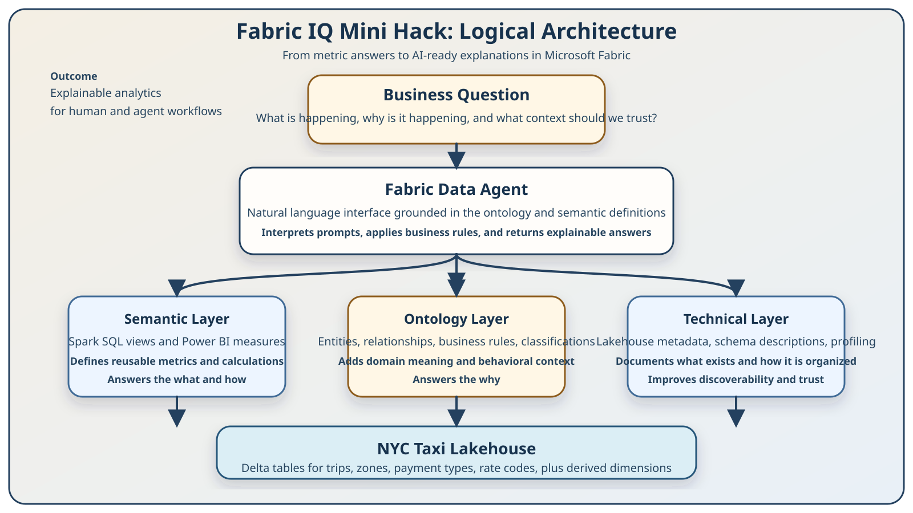
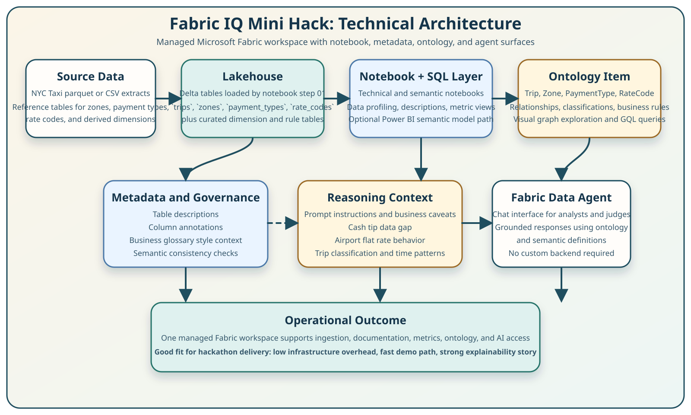

Fabric IQ Mini Hack
A Microsoft Fabric mini hack that demonstrates how semantic models and ontologies turn correct metrics into explainable AI answers.
The demo is not just about answering a question. It is about preventing a confident but wrong answer by giving the AI explicit business meaning.
What the repo already proves
The repo covers the full path from lakehouse creation through ontology enrichment, agent setup, query validation, and architecture reflection.
It supports both code-first and UI-first workshop paths, which is strong for a hackathon demo because it broadens your audience.
The strongest differentiator is the cash-tip caveat: the ontology prevents a plausible but misleading narrative from the AI.
The repo already contains technical metadata, semantic metrics, ontology relationships, agent instructions, and test prompts.
The before-and-after agent comparison is presentation-ready and should be a centerpiece of your judging story.
The materials are workshop-shaped rather than pitch-shaped, so this presentation packages them into a faster executive narrative.
Why this mini hack matters
- Traditional BI tells users what happened and how a measure was calculated.
- It usually does not explain whether the underlying pattern is trustworthy.
- Agents without business context can return elegant but wrong explanations.
- Keep the data and metric logic in Fabric.
- Add ontology entities, relationships, and business caveats.
- Ground the Fabric Data Agent in those rules so it can explain why a pattern appears and when not to trust first-glance numbers.
How meaning flows into the answer

The semantic layer computes reusable numbers, the ontology layer explains those numbers, and the data agent combines both into business-ready answers.
How the Fabric components fit together

This design keeps delivery lightweight: managed Fabric services, notebook-driven preparation, ontology modeling, and a native data agent experience.
Suggested mini hack flow
Build the lakehouse and populate the taxi and reference tables.
Add descriptions and data profiling so the platform knows what exists.
Create Spark SQL views or Power BI measures for consistent calculations.
Create ontology entities, relationships, and rule context.
Show the difference between naive answers and ontology-grounded answers.
The killer use case for judges
Why are tips lower in Brooklyn than Manhattan?
Risk without ontologyThe AI invents plausible narratives about rider behavior or service quality.
The ontology and agent instructions explain that cash trips do not record tips, so lower recorded tips do not automatically mean worse tipping behavior.
You are not just showing a chart or an agent. You are showing a governance and trust pattern for enterprise AI analytics inside Fabric.
What to say clearly in the presentation
- Managed Fabric environment keeps delivery fast.
- Semantic and ontology layers stay close to the governed data.
- Visual graph exploration helps non-engineers understand the model.
- The before/after agent test makes business impact obvious.
- Fabric ontology preview does not provide formal reasoning or constraint validation.
- Some rules still live in agent instructions rather than first-class queryable artifacts.
- Large graph entities may be less pleasant to explore interactively.
- This is excellent for explainability; it is not yet a full knowledge-graph platform replacement.
Winning message
Fabric IQ Mini Hack shows how to move from reporting numbers to delivering AI answers that know when the numbers can mislead.
“We are using Microsoft Fabric not only as a data platform, but as the place where business meaning becomes operational for AI.”
Files included here: two rendered SVG diagrams, two Excalidraw-compatible sources, and this self-contained presentation HTML.